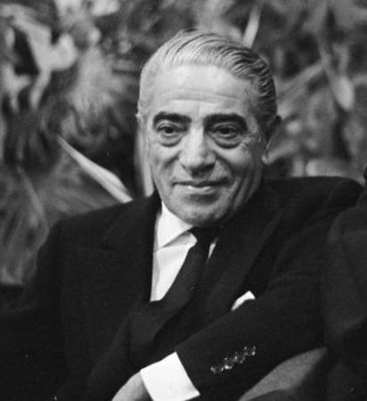

Aristotle Socrates Onassis (Greek: Αριστοτέλης Ωνάσης, Aristotelis
Onasis; 20 January 1906 – 15 March 1975),[1] commonly called Ari or
Aristo Onassis, was a Greek-Argentine shipping magnate, who amassed
the world's largest privately owned shipping fleet and was one of
the world's richest and most famous men.

The following list is a time line of Onassis Life
- born in Karataş, Smyrna, Ottoman Empire.
- He left from Smyrna during the great fire of Smyrna in 1922.
- He went to Buenos Aires, Argentina and start working as a telephone operator.